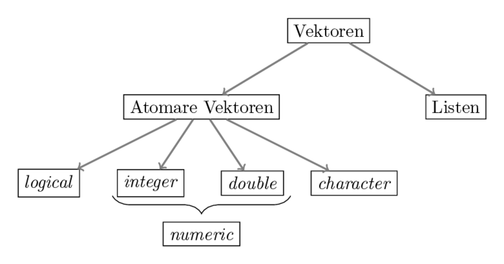
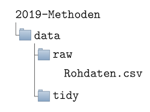

Chapter 3 Erste Schritte in R
Nach diesen (wichtigen) Vorbereitungsschritten wollen wir nun mit dem eigentlichen Programmieren anfangen. Zu diesem Zweck müssen wir uns mit der Syntax von R vertraut machen, also mit den Regeln, denen wir folgen müssen, wenn wir Code schreiben, damit der Computer versteht, was wir ihm eigentlich in R sagen wollen.
3.1 Befehle in R an den Computer übermitteln
Grundsätzlich können wir über R Studio auf zwei Arten mit dem Computer “kommunizieren”: über die Konsole direkt, oder indem wir im Skriptbereich ein Skript schreiben und dies dann ausführen.
Als Beispiel für die erste Möglichkeit wollen wir mit Hilfe von R die Zahlen 2 und 5 miteinander addieren. Zu diesem Zweck können wir einfach 2 + 2 in die Konsole eingeben, und den Befehl mit ‘Enter’ an den Computer senden. Da es sich beim Ausdruck 2 + 3 um korrekten R Code handelt, ‘versteht’ der Computer was wir von ihm wollen und gibt uns das entsprechende Ergebnis aus:
2 + 3#> [1] 5Auf diese Art und Weise könne wir R als einfachen Taschenrechner verwenden, denn für alle einfachen mathematischen Operationen können wir bestimmte Symbole als Operatoren verwenden. An dieser Stelle sei noch darauf hingewiesen, dass das Symbol # in R einen Kommentar einleitet, das heißt alles was in einer Zeile nach # steht wird vom Computer ignoriert und man kann sich einfach Notizen in seinem Code machen.
2 + 2 # Addition#> [1] 42/2 # Division#> [1] 14*2 # Multiplikation#> [1] 83**2 # Potenzierung#> [1] 9Alternativ können wir die Befehle in einem Skript aufschreiben, und dieses Skript dann ausführen. Während die Interaktion über die Konsole sinnvoll ist um die Effekte bestimmter Befehle auszuprobieren, bietet sich die Verwendung von Skripten an, wenn wir mit den Befehlen später weiter arbeiten wollen, oder sie anderen Menschen zugänglich zu machen. Den das Skript können wir als Datei auf unserem Computer speichern, vorzugsweise im Unterordner R unseres R-Projekts (siehe Abschnitt Relevante Unterordner erstellen), und dann später weiterverwenden.
Die Berechnungen, die wir bisland durchgeführt haben sind zugegebenermaßen nicht sonderlich spannend. Um fortgeschrittene Operationen in R durchführen und verstehen zu können müssen wir uns zunächst mit den Konzepten von Objekten, Funktionen und Zuweisungen beschäftigen.
3.2 Objekte, Funktionen und Zuweisungen
To understand computations in R, two slogans are helpful: Everything that exists is an object. Everything that happens is a function call.
Mit der Aussage ‘Alles in R ist ein Objekt’ ist gemeint, dass jede Zahl, jede Funktion, oder jeder Buchstabe in R ein Objekt ist, das irgendwo auf dem Speicher Ihres Rechners abgespeichert ist.
In der Berechnung 2 + 3 ist die Zahl 2 genauso ein Objekt wie die Zahl 3 und die Additionsfunktion, die durch den Operator + aufgerufen wird.
Mit der Aussage ‘Alles was in R passiert ist ein Funktionsaufruf’ ist gemeint, dass wenn wir R eine Berechnung durchführen lassen, tun wir dies indem wir eine Funktion aufrufen.
Funktionen sind Algorithmen, die bestimmte Routinen auf einen Input anwenden und dabei einen Output produzieren. Die Additionsfunktion, die wir in der Berechnung 2 + 3 aufgerufen haben hat als Input die beiden Zahlen 2 und 3 aufgenommen, hat auf sie die Routine der Addition angewandt und als Output die Zahl 5 ausgegeben. Der Output 5 ist dabei in R genauso ein Objekt wie die Inputs 2 und 3, sowie die Funktion +.
Ein ‘Problem’ ist, dass R im vorliegenden Falle den Output der Berechnung zwar ausgibt, wir danach aber keinen Zugriff darauf mehr haben:
2 + 3#> [1] 5Falls wir den Output weiterverwenden wollen, macht es Sinn, dem Output Objekt einen Namen zu geben, damit wir später wieder darauf zugreifen können. Der Prozess einem Objekt einen Namen zu Geben wird Zuweisung oder Assignment genannt und durch die Funktion assign vorgenommen:
assign("zwischenergebnis", 2 + 3)Wir können nun das Ergebnis der Berechnung 2 + 3 aufrufen, indem wir in R den Namen des Output Objekts eingeben:
zwischenergebnis#> [1] 5Da Zuweisungen so eine große Rolle spielen und sehr häufig vorkommen gibt es auch für die Funktion assign eine Kurzschreibweise, nämlich <-. Entsprechend sind die folgenden beiden Befehle äquivalent:
assign("zwischenergebnis", 2 + 3)
zwischenergebnis <- 2 + 3Entsprechend werden wir Zuweisungen immer mit dem <- Operator durchführen.2
Wir können in R nicht beliebig Namen vergeben. Gültige (also: syntaktisch korrekte) Namen …
- enthalten nur Buchstaben, Zahlen und die Symbole
.und_ - fangen nicht mit
.oder einer Zahl an!
Zudem gibt es einige Wörter, die schlicht nicht als Name verwendet werden dürgen, z.B. function, TRUE, oder if. Die gesamte Liste verbotener Worte kann mit dem Befehl ?Reserved ausgegeben werden.
Wenn man einen Namen vergeben möchte, der nicht mit den gerade formulierten Regeln kompatibel ist, gibt R eine Fehlermeldung aus:
TRUE <- 5#> Error in TRUE <- 5: invalid (do_set) left-hand side to assignmentZudem sollte man folgendes beachten:
- Namen sollten kurz und informativ sein; entsprechen ist
sample_meanein guter Name,shit15_2dagegen eher weniger - Man sollte nie Umlaute in Namen verwenden
- R ist case sensitive, d.h.
mean_valueist ein anderer Name alsMean_Value - Auch wenn möglich, sollte man nie von R bereit gestellte Funktionen überschreiben. Eine Zuweisung wie
assign <- 2ist zwar möglich, führt in der Regel aber zu großem Unglück, weil man nicht mehr ganz einfach auf die zugrundeliegende Funktion zurückgreifen kann.
Hinweis: Alle aktuellen Namenszuweisungen sind im Bereich
Environmentin R Studio (Nr. 4 in der Abbildung oben) aufgelistet und können durch die Funktionls()angezeigt werden.
Hinweis: Ein Objekt kann mehrere Namen haben, aber kein Name kann zu mehreren Objekten zeigen, da im Zweifel eine neue Zuweisung die alte Zuweisung überschreibt:
x <- 2
y <- 2 # Das Objekt 2 hat nun zwei Namen
print(x)#> [1] 2print(y)#> [1] 2x <- 4 # Der Name 'x' zeigt nun zum Objekt '4', nicht mehr zu '2'
print(x)#> [1] 4Hinweis: Wie Sie vielleicht bereits bemerkt haben wird nach einer Zuweisung kein Wert sichtbar ausgegeben:
2 + 2 # Keine Zuweisung, R gibt das Ergebnis in der Konsole aus#> [1] 4x <- 2 + 2 # Zuweisung, R gibt das Ergebnis in der Konsole nicht aus3.3 Zusammenfassung
- Wir können Befehle in R Studio an den Computer übermitteln indem wir (a) den R Code in die Konsole schreiben und Enter drücken oder (b) den Code in ein Skript schreiben und dann ausführen
- Alles was in R existiert ist ein Objekt, alles was in R passiert ist ein Funktionsaufruf
- Wir können einem Objekt mit Hilfe von
<-einen Namen geben und dann später wieder aufrufen. Den Prozess der Namensgebung nennen wir Assignment und wir können uns alle aktuell von uns vergebenen Namen mit der Funktionls()anzeigen lassen. - Eine Funktion ist ein Objekt, das auf einen Input eine bestimmte Routine anwendet und einen Output produziert
An dieser Stelle sei noch auf die Hilfefunktion help() hingewiesen. Falls Sie Informationen über ein Objekt bekommen wollen können Sie so weitere Informationen bekommen. Wenn Sie z.B. genauere Informationen über die Verwendung der Funktion assign erhalten wollen, können Sie Folgendes eingeben:
help(assign)3.4 Grundlegende Objeke in R
Wir haben bereits gelernt, dass alles was in R existiert ein Objekt ist. Wir haben aber auch schon gelernt, dass es unterschiedliche Typen von Objekten gibt: Zahlen, wie 2 oder 3 und Funktionen wie assign.3 Tatsächlich gibt es noch viel mehr Arten von Objekten. Ein gutes Verständnis der Objektarten ist Grundvoraussetzung später anspruchsvolle Programmieraufgaben zu lösen. Daher wollen wir uns im Folgenden mit den wichtigsten Objektarten in R auseinandersetzen.
3.4.1 Funktionen
Wie oben bereits kurz erwähnt handelt es sich bei Funktionen um Algorithmen, die bestimmte Routinen auf einen Input anwenden und dabei einen Output produzieren.
Die Funktion log() zum Beispiel nimmt als Input eine Zahl und gibt als Output den Logarithmus dieser Zahl aus:
log(2)#> [1] 0.6931472Eine Funktion aufrufen
In R gibt es prinzipiell vier verschiedene Arten Funktionen aufzurufen. Nur zwei davon sind allerdings aktuell für uns relevant.
Die bei weitem wichtigste Variante ist die so genannte Prefix-Form. Dies ist die Form, die wir bei der überwältigenden Anzahl von Funktionen verwenden werden. Wir schreiben hier zunächst den Namen der Funktion (im Folgenden Beispiel assign), dann in Klammern und mit Kommata getrennt die Argumente der Funktion (hier der Name test und die Zahl 2):
assign("test", 2)Ein hin und wieder auftretende Form ist die so genannte Infix-Form. Hier wird der Funktionsname zwischen die Argumente geschrieben. Dies ist, wie wir oben bereits bemerkt haben, bei vielen mathematischen Funktionen wie +, - oder / der Fall. Streng genommen ist die die Infix-Form aber nur eine Abkürzung, denn jeder Funktionsaufruf in Infix-Form kann auch in Prefix-Form geschrieben werden, wie folgendes Beispiel zeigt:
2 + 3#> [1] 5`+`(2,3)#> [1] 5Die Argumente einer Funktion
Die Argumente einer Funktion stellen zum einen den Input für die in der Funktion implementierten Routine dar.
Die Funktion sum zum Beispiel nimmt als Argumente eine beliebige Anzahl an Zahlen (ihr ‘Input’) und berechnet die Summe dieser Zahlen:
sum(1,2,3,4)#> [1] 10Darüber hinaus akzeptiert sum() noch ein optionales Argument, na.rm, welches entweder den Wert TRUE oder FALSE annehmen kann. Wenn wir das Argument nicht explizit spezifizieren nimmt es automatisch FALSE als den Standardwert an.
Dieses optionale Argument ist kein klassischer Input, sondern kontrolliert das genaue Verhalten der Funktion. Im Falle von sum() werden fehlende Werte, so genannte NA (siehe unten) ignoriert bevor die Summe der Inputs gebildet wird wenn na.rm den Wert TRUE hat:
sum(1,2,3,4,NA) #> [1] NAsum(1,2,3,4,NA, na.rm = TRUE) #> [1] 10Wenn wir wissen wollen, welche Argumente eine Funktion akzeptiert ist es immer eine gute Idee über die Funktion help() einen Blick in die Dokumentation zu werfen!
Im Falle von sum() sehen wir hier sofort, dass die Funktion neben den zu addierenden Zahlen ein optionales Argument na.rm akzeptiert, welches den Standardwert FALSE annimmt.
Eigene Funktionen definieren
Sehr häufig möchten wir selbst Funktionen definieren. Das können wir mit dem reservierten Keyword function machen. Als Beispiel wollen wir eine Funktion pythagoras definieren, die als Argumente die Seitenlängen der Katheten eines rechtwinkligen Dreiecks annimmt und über den Satz des Pythagoras die Länge der Hypothenuse bestimmt:
pythagoras <- function(kathete_1, kathete_2){
hypo_quadrat <- kathete_1**2 + kathete_2**2
l_hypothenuse <- sqrt(hypo_quadrat) # sqrt() zieht die Quadratwurzel
return(l_hypothenuse)
}Wir definieren eine Funktion durch die Funktion function(). In der Regel beginnen wir die Definition indem wir der zu erstellenden mit einem Namen assoziieren (hier: ‘pythagoras’) damit wir sie später auch verwenden können.
Die Argumente für function sind dann die Argumente, welche die zu definierende Funktion annehmen soll, in diesem Fall kathete_1 und kathete_2. Danach beginnen wir den ‘function body’, also den Code für die Routine, welche die Funktion ausführen soll, mit einer geschweiften Klammer.
Innerhalb des function bodies wird dann die entsprechende Routine implementiert. Im vorliegenden Beispiel definieren wir zunächst die Summe der Werte von kathete_1 und kathete_2 als ein Zwischenergebnis, welches hier hypo_quadrat genannt wird. Dies ist der häufig unter \(c^2=a^2 + b^2\) bekannte Teil des Satz von Pythagoras. Da wir an der ‘normalen’ Länge der Hypothenuse interesssiert sind, ziehen wir mit der Funktion sqrt() noch die Wurzel von hypo_quadrat, und geben dem resultierenden Objekt den Namen l_hypothenuse, welches in der letzten Zeile mit Hilfe des Keywords return als der Wert definiert wird, den die Funktion als Output ausgibt.4
Am Ende der Routine kann man mit dem Keyword return explizit machen welchen Wert die Funktion als Output ausgeben soll. Wenn wir die Funktion nun aufrufen wird die oben definierte Routine ausgeführt:
pythagoras(2, 4)#> [1] 4.472136Beachten Sie, dass alle Objet Namen, die innerhalb des function bodies verwendet werden gehen nach dem Funktionsaufruf verloren:5 Deswegen kommt es im vorliegenden Falle zu einem Fehler, da hypo_quadrat nur innerhalb des function bodies existiert:
pythagoras <- function(kathete_1, kathete_2){
hypo_quadrat <- kathete_1**2 + kathete_2**2
l_hypothenuse <- sqrt(hypo_quadrat) # sqrt() zieht die Quadratwurzel
return(l_hypothenuse)
}
x <- pythagoras(2, 4)
hypo_quadrat#> Error in eval(expr, envir, enclos): object 'hypo_quadrat' not foundEs ist immer eine gute Idee, die selbst definierten Funktionen zu dokumentieren - nicht nur wenn wir sie auch anderen zur Verfügung stellen wollen, sondern auch damit wir selbst nach einer möglichen Pause unseren Code noch gut verstehen können. Nichts ist frustrierender als nach einer mehrwöchigen Pause viele Stunden investieren zu müssen, den eigens programmierten Code zu entschlüsseln!
Die Dokumentation von Funktionen kann mit Hilfe von einfachen Kommentaren erfolgen, ich empfehle jedoch sofort sich die hier beschriebenen Konventionen anzugewöhnen. In diesem Falle würde eine Dokumentation unserer Funktion pythagoras folgendermaßen aussehen:
#' Berechne die Länge der Hypothenuse in einem rechtwinkligen Dreieck
#'
#' Diese Funktion nimmt als Argumente die Längen der beiden Katheten eines
#' rechtwinkligen Dreiecks und berechnet daraus die Länge der Hypothenuse.
#' @param kathete_1 Die Länge der ersten Kathete
#' @param kathete_2 Die Länge der zweiten Kathete
#' @return Die Länge der Hypothenuse des durch a und b definierten
#' rechtwinkligen Dreieckst
pythagoras <- function(kathete_1, kathete_2){
hypo_quadrat <- kathete_1**2 + kathete_2**2
l_hypothenuse <- sqrt(hypo_quadrat) # sqrt() zieht die Quadratwurzel
return(l_hypothenuse)
}Die Dokumentation wird also direkt vor die Definition der Funktion gesetzt. In der ersten Zeile gibt man der Funktion einen maximal einzeiligen Titel, der nicht länger als 80 Zeichen sein sollte und die Funktion prägnant beschreibt.
Dann, nach einer Lehrzeile wird genauer beschrieben was die Funktion macht. Danach werden die Argumente der Funktion beschrieben. Für jedes Argument beginnen wir die Reihe mit @param, gefolgt von dem Namen des Arguments und dann einer kurzen Beschreibung.
Nach den Argumenten beschreiben wir noch kurz was der Output der Funktion ist. Diese Zeile wird mit @return begonnen.
Die Dokumentation einer Funktion sollte also zumindest die Parameter und die Art des Outputs erklären.
Gründe für die Verwendung eigener Funktionen
Eigene Funktionen zu definieren ist in der Praxis extrem hilfreich und es ist empfehlenswert Routinen, die mehrere Male verwendet werden grundsätzlich als Funktionen zu schreiben. Dafür gibt es mehrere Gründe:
- Der Code wird kürzer und transparenter. Zwar ist kurzer Code nicht notwendigerweise leichter zu verstehen als langer, aber Funktionen können besonders gut dokumentiert werden (am besten indem man den hier beschriebenen Konventionen folgt).
- Funktionen bieten Struktur. Funktionen fassen in der Regel Ihre Vorstellung davon zusammen, wie ein bestimmtes Problem zu lösen ist. Da man sich diese Gedanken nicht ständig neu machen möchte ist es sinnvoll sie einmalig in einer Funktion zusammen zu fassen.
- Funktionen erleichtern Korrekturen. Wenn Sie merken, dass Sie in der Implementierung einer Routine einen Fehler gemacht haben müssen Sie im besten Falle nur einmal die Definition der Funktion korrigieren - im schlimmsten Falle müssen sie in ihrem Code nach der Routine suchen und sie in jedem einzelnen Anwendungsfall erneut korrigieren.
Es gibt noch viele weitere Gründe dafür, Funktionen häufig zu verwenden. Viele hängen mit dem Entwicklerprinzip DRY (“Don’t Repeat Yourself”) zusammen.
3.4.2 Vektoren
Vektoren sind einer der wichtigsten Objektypen in R. Quasi alle Daten mit denen wir in R arbeiten werden als Vektoren behandelt.
Was Vektoren angeht gibt es wiederum die wichtige Unterscheidung von atomaren Vektoren und Listen. Beide bestehen ihrerseits aus Objekten und sie unterscheiden sich dadurch, dass atomare Vektoren nur aus Objekten des gleichen Typs bestehen können, Listen dagegen auch Objekte unterschiedlichen Typs beinhalten können.
Entsprechend kann jeder atomare Vektor einem Typ zugeordnet werden, je nachdem welchen Typ seine Bestandteile haben. Hier sind insbesondere vier Typen relevant:
logical(logische Werte): es gibt zwei logische Werte,TRUEundFALSE, welche auch mitToderFabgekürzt werden könneninteger(ganze Zahlen): das sollte im Prinzip selbsterklärend sein, allerding muss den ganzen Zahlen in R immer der BuchstabeLfolgen, damit die Zahl tatsächlich als ganze Zahl interpretiert wird.6 Beispiele sind1L,400Loder10L.
double(Dezimalzahlen): auch das sollte selbsterklärend sein; Beispiele wären1.5,0.0, oder-500.32.- Ganze Zahlen und Dezimalzahlen werden häufig unter der Kategorie
numericzusammengefasst. Dies ist in der Praxis aber quasi nie hilfreich und man sollte diese Kategorie möglichst nie verwenden. - Wörter (
character): sie sind dadurch gekennzeichnet, dass sie auch Buchstaben enthalten können und am Anfang und Ende ein"haben. Beispiele hier wären"Hallo","500"oder"1_2_Drei". - Es gibt noch zwei weitere besondere ‘Typen’, die strikt gesehen keine atomaren Vektoren darstellen, allerdings in diesem Kontext schon häufig auftauchen:
NULL, was strikt genommen ein eigener Datentyp ist und immer die Länge 0 hat, sowieNA, das einen fehlenden Wert darstellt
Hieraus ergibt sich folgende Aufteilung für Vektoren:

Wir werden nun die einzelnen Typen genauer betrachten. Vorher wollen wir jedoch noch die Funktion typeof einführen. Sie hilft uns in der Praxis den Typ eines Objekts herauszufinden. Dafür rufen wir einfach die Funktion typeof mit dem zu untersuchenden Objekt oder dessen Namen auf:
typeof(2L)#> [1] "integer"x <- 22.0
typeof(x)#> [1] "double"Wir können auch explizit testen ob ein Objekt ein Objekt bestimmten Typs ist. Die generelle Syntax hierfür ist: is.*(), also z.B.:
x <- 1.0
is.integer(x)#> [1] FALSEis.double(x)#> [1] TRUEDiese Funktion gibt als Output also immer einen logischen Wert aus, je nachdem ob die Inputs des entsprechenden Typs sind oder nicht.
Bestimmte Objekte können in einen anderen Typ transformiert werden. Hier spricht man von coercion und die generelle Syntax hierfür ist: as.*(), also z.B.:
x <- "2"
print(
typeof(x)
)#> [1] "character"x <- as.double(x)
print(
typeof(x)
)#> [1] "double"Allerdings ist eine Transformation nicht immer möglicht:
as.double("Hallo")#> Warning: NAs introduced by coercion#> [1] NADa R nicht weiß wie man aus dem Wort ‘Hallo’ eine Dezimalzahl machen soll, transformiert er das Wort in einen ‘Fehlenden Wert’, der in R als NA bekannt ist und unten noch genauer diskutiert wird.
Für die Grundtypen ergibt sich folgende logische Hierachie an trivialen Transformationen: logical → integer → double → character, d.h. man kann eine Dezimalzahl ohne Probleme in ein Wort transformieren, aber nicht umgekehrt:
x <- 2
y <- as.character(x)
print(y)#> [1] "2"z <- as.double(y) # Das funktioniert
print(z)#> [1] 2k <- as.double("Hallo") # Das nicht#> Warning: NAs introduced by coercionprint(k)#> [1] NADa nicht immer ganz klar ist wann R bei Transformationen entgegen der gerade eingeführten Hierachie eine Warnung ausgibt und wann nicht sollte man hier immer besondere Vorsicht walten lassen!
Zudem ist bei jeder Transformation Vorsicht geboten, da sie häufig Eigenschaften der Objekte implizit verändert. So führt eine Transformation von einer Dezimalzahl hin zu einer ganzen Zahl teils zu unerwartetem Rundungsverhalten:
x <- 1.99
as.integer(x)#> [1] 1Auch führen Transformationen, die der eben genannten Hierachie zuwiderlaufen, nicht zwangsweise zu Fehlern, sondern ‘lediglich’ zu unerwarteten Änderungen, die in jedem Fall vermieden werden sollten:
z <- as.logical(99)
print(z)#> [1] TRUEHäufig transformieren Funktionen ihre Argumente automatisch, was meistens hilfreich ist, manchmal aber auch gefährlich sein kann:
x <- 1L # Integer
y <- 2.0 # Double
z <- x + y
typeof(z)#> [1] "double"Interessanterweise werden logische Werte ebenfalls transformiert:
x <- TRUE
y <- FALSE
z <- x + y # TRUE wird zu 1, FALSE zu 0
print(z) #> [1] 1Daher sollte man immer den Überblick behalten, mit welchen Objekttypen man gerade arbeitet.
Hier noch ein kurzer Überblick zu den Test- und Transformationsbefehlen:
| Typ | Test | Transformation |
|---|---|---|
| logical | is.logical |
as.logical |
| double | is.double |
as.double |
| integer | is.integer |
as.integer |
| character | is.character |
as.character |
| function | is.function |
as.function |
| NA | is.na |
NA |
| NULL | is.null |
as.null |
Ein letzter Hinweis zu Skalaren. Unter Skalaren verstehen wir in der Regel ‘einzelne Zahlen’, z.B. 2. Dieses Konzept gibt es in R nicht. 2 ist ein Vektor der Länge 1. Wir unterscheiden also vom Typ her nicht zwischen einem Vektor, der nur ein oder mehrere Elemente hat.
Hinweis: Um längere Vektoren zu erstellen, verwenden wir die Funktion c():
x <- c(1, 2, 3)
x#> [1] 1 2 3Dabei können auch Vektoren miteinander verbunden werden:
x <- 1:3 # Shortcut für: x <- c(1, 2, 3)
y <- 4:6
z <- c(x, y)
z#> [1] 1 2 3 4 5 6Da atomare Vektoren immer nur Objekte des gleichen Typs enthalten können, könnte man erwarten, dass es zu einem Fehler kommt, wenn wir Objete unterschiedlichen Type kombinieren wollen:
x <- c(1, "Hallo")Tatsächlich transformiert R die Objekte allerdings nach der oben beschriebenen Hierachie logical → integer → double → character. Da hier keine Warnung oder kein Fehler ausgegeben wird, sind derlei Transformationen eine gefährliche Fehlerquelle!
Hinweis: Die Länge eines Vektors kann mit der Funktion length bestimmt werden:
x = c(1, 2, 3)
len_x <- length(x)
len_x#> [1] 33.4.3 Logische Werte (logical)
Die logischen Werte TRUE und FALSE sind häufig das Ergebnis von logischen Abfragen, z.B. ‘Ist 2 größer als 1?’. Solche Abfragen kommen in der Forschungspraxis häufig vor und es macht Sinn, sich mit den häufigsten logischen Operatoren vertraut zu machen:
| Operator | Funktion in R | Beispiel |
|---|---|---|
| größer | > |
2>1 |
| kleiner | < |
2<4 |
| gleich | == |
4==3 |
| größer gleich | >= |
8>=8 |
| kleiner gleich | <= |
5<=9 |
| nicht gleich | != |
4!=5 |
| und | & |
x<90 & x>55 |
| oder | | |
x<90 | x>55 |
| entweder oder | xor() |
xor(2<1, 2>1) |
| nicht | ! |
!(x==2) |
| ist wahr | isTRUE() |
isTRUE(1>2) |
Das Ergebnis eines solches Tests ist immer ein logischer Wert:
x <- 4
y <- x == 8
typeof(y)#> [1] "logical"Es können auch längere Vektoren getestet werden:
x <- 1:3
x<2#> [1] TRUE FALSE FALSETests können beliebig miteinander verknüpft werden:
x <- 1L
x>2 | x<2 & (is.double(x) & x!=0)#> [1] FALSEDa für viele mathematischen Operationen TRUE als die Zahl 1 interpretiert wird, ist es einfach zu testen wie häufig eine bestimmte Bedingung erfüllt ist:
x <- 1:50
smaller_20 <- x<20
print(
sum(smaller_20) # Wie viele Elemente sind kleiner als 20?
)#> [1] 19print(
sum(smaller_20/length(x)) # Wie hoch ist der Anteil von diesen Elementen?
)#> [1] 0.383.4.4 Wörter (character)
Wörter werden in R dadurch gebildet, dass an ihrem Anfang und Ende das Symbol ' oder "" steht:
x <- "Hallo"
typeof(x)#> [1] "character"y <- 'Auf Wiedersehen'
typeof(y)#> [1] "character"Wie andere Vektoren können sie mit der Funktion c() verbunden werden:
z <- c(x, " und ", y)
z#> [1] "Hallo" " und " "Auf Wiedersehen"Nützlich ist in diesem Zusammenhang die Funktion paste(), die Elemente von mehreren Vektoren in Wörter transformiert und verbindet:
x <- 1:10
y <- paste("Versuch Nr.", x)
y#> [1] "Versuch Nr. 1" "Versuch Nr. 2" "Versuch Nr. 3" "Versuch Nr. 4"
#> [5] "Versuch Nr. 5" "Versuch Nr. 6" "Versuch Nr. 7" "Versuch Nr. 8"
#> [9] "Versuch Nr. 9" "Versuch Nr. 10"paste() akzeptiert ein optionales Argument sep, mit dem wir den Wert angeben können, der zwischen die zu verbindenden Elemente gesetzt wird:
tag_nr <- 1:10
x_axis <- paste("Tag", tag_nr, sep = ": ")
x_axis#> [1] "Tag: 1" "Tag: 2" "Tag: 3" "Tag: 4" "Tag: 5" "Tag: 6" "Tag: 7"
#> [8] "Tag: 8" "Tag: 9" "Tag: 10"Hinweis: Hier haben wir ein Beispiel für das so genannte ‘Recycling’ gesehen: da der Vektor
c("Tag")kürzer war als der Vektortag_nrwirdc("Tag")einfach kopiert damit die Operation mitpaste()Sinn ergibt. Recycling ist oft praktisch, aber manchmal auch schädlich, nämlich dann, wenn man eigentlich davon ausgeht eine Operation mit zwei gleich langen Vektoren durchzuführen, dies aber tatsächlich nicht tut. In einem solchen Fall führt Recycling dazu, dass keine Fehlermeldung ausgegeben wird. Ein Beispiel dafür gibt folgender Code, in dem die Intention klar die Verbindung aller Wochentage zu Zahlen ist und einfach ein Wochentag vergessen wurde:
tage <- paste("Tag ", 1:7, ":", sep = "")
tag_namen <- c("Montag", "Dienstag", "Mittwoch", "Donnerstag", "Freitag", "Samstag")
paste(tage, tag_namen)#> [1] "Tag 1: Montag" "Tag 2: Dienstag" "Tag 3: Mittwoch"
#> [4] "Tag 4: Donnerstag" "Tag 5: Freitag" "Tag 6: Samstag"
#> [7] "Tag 7: Montag"3.4.5 Fehlende Werte und NULL
Fehlende Werte werden in R als NA kodiert. NA erfüllt gerade in statistischen Anwendungen eine wichtige Rolle, da ein bestimmter Platz in einem Vektor aktuell fehlend sein müsste, aber als Platz dennoch existieren muss.
Beispiel: Der Vektor
xenthält einen logischen Wert, der zeigt ob eine Person die Fragen auf einem Fragebogen richtig beantwortet hat. Wenn die Person die dritte Frage auf dem Fragebogen nicht beantwortet hat, sollte dies durchNAkenntlich gemacht werden. Einfach den Wert komplett wegzulassen macht es im Nachhinein unmöglich festzustellen welche Frage die Person nicht beantwortet hat.
Die meisten Operationen die NA als einen Input bekommen geben auch als Output NA aus, weil unklar ist wie die Operation mit unterschiedlichen Werten für den fehlenden Wert ausgehen würde:
5 + NA#> [1] NAEinzige Ausnahmen sind Operationen, die unabhängig vom fehlenden Wert einen bestimmten Wert annehmen:
NA | TRUE # Gibt immer TRUE, unabhängig vom Wert für NA#> [1] TRUEUm zu testen ob ein Vektor x fehlende Werte enthält sollte die Funktion is.na verwendet werden, und nicht etwa der Ausdruck x==NA:
x <- c(NA, 5, NA, 10)
print(x == NA) # Unklar, da man nicht weiß, ob alle NA für den gleichen Wert stehen#> [1] NA NA NA NAprint(
is.na(x)
)#> [1] TRUE FALSE TRUE FALSEWenn eine Operation einen nicht zu definierenden Wert ausgibt, ist das Ergebnis nicht NA sondern NaN (not a number):
0 / 0#> [1] NaNEine weitere Besonderheit ist NULL, welches in der Regel als Vektor der Länge 0 gilt, aber häufig zu besonderen Zwecken verwendet wird:
x <- NULL
length(x)#> [1] 03.4.6 Indizierung und Ersetzung
Einzelne Elemente von atomare Vektoren können mit eckigen Klammern extrahiert werden:
x <- c(2,4,6)
x[1]#> [1] 2Auf diese Weise können auch bestimmte Elemente modifiziert werden:
x <- c(2,4,6)
x[2] <- 99
x#> [1] 2 99 6Es kann auch mehr als ein Element extrahiert werden:
x[1:2]#> [1] 2 99Negative Indizes sind auch möglich, diese eliminieren die entsprechenden Elemente:
x[-1]#> [1] 99 6Um das letzte Element eines Vektors zu bekommen verwendet man einen Umweg über die Funktion length():
x[length(x)]#> [1] 63.4.7 Nützliche Funktionen für atomare Vektoren
Hier sollen nur einige Funktionen erwähnt werden, die im Kontext von atomaren Vektoren besonders praktisch sind,7 inbesondere wenn es darum geht solche Vektoren herzustellen, bzw. Rechenoperationen mit ihnen durchzuführen.
Herstellung von atomaren Vektoren:
Eine Sequenz ganzer Zahlen wird in der Regel sehr häufig gebraucht. Entsprechend gibt es den hilfreichen Shortcut:
x <- 1:10
x#> [1] 1 2 3 4 5 6 7 8 9 10y <- 10:1
y#> [1] 10 9 8 7 6 5 4 3 2 1Häufig möchten wir jedoch eine kompliziertere Sequenz bauen. In dem Fall hilft uns die allgemeinere Funktion seq():
x <- seq(1, 10)
print(x)#> [1] 1 2 3 4 5 6 7 8 9 10In diesem Fall ist seq() äquivalent zu :. seq erlaubt aber mehrere optionale Argumente: so können wir mit by die Schrittlänge zwischen den einzelnen Zahlen definieren.
y <- seq(1, 10, by = 0.5)
print(y)#> [1] 1.0 1.5 2.0 2.5 3.0 3.5 4.0 4.5 5.0 5.5 6.0 6.5 7.0 7.5 8.0
#> [16] 8.5 9.0 9.5 10.0Wenn wir die Länge des resultierenden Vektors festlegen wollen und die Schrittlänge von R automatisch festgelegt werden soll, können wir dies mit dem Argument length.out machen:
z <- seq(2, 8, length.out = 4)
print(z)#> [1] 2 4 6 8Und wenn wir einen Vektor in der Länge eines anderen Vektors erstellen wollen, bietet sich das Argument along.with an. Dies wird häufig für das Erstellen von Indexvektoren verwendet. In einem solchen Fall müssen wir die Indexzahlen nicht direkt angeben:
z_index <- seq(along.with = z)
print(z_index)#> [1] 1 2 3 4Auch häufig möchten wir einen bestimmten Wert wiederholen. Das geht mit der Funktion rep:
x <- rep(NA, 5)
print(x)#> [1] NA NA NA NA NARechenoperationen
Es gibt eine Reihe von Operationen, die wir sehr häufig gemeinsam mit Vektoren anwenden. Häufig interessiert und die Länge eines Vektors. Dafür können wir die Funktion length() verwenden:
x <- c(1,2,3,4)
length(x)#> [1] 4Wenn wir den größten oder kleinsten Wert eines Vektors erfahren möchten geht das mit den Funktionen min() und max():
min(x)#> [1] 1max(x)#> [1] 4Beide Funktionen besitzen ein optionales Argument na.rm, das entweder TRUE oder FALSE sein kann. Im Fallse von TRUE werden alle NA Werte für die Rechenoperation entfernt:
y <- c(1,2,3,4,NA)
min(y)#> [1] NAmin(y, na.rm = TRUE)#> [1] 1Den Mittelwert bzw die Varianz/Standardabweichung der Elemente bekommen wir mit mean(), var(), bzw. sd(), wobei alle Funktionen auch das optionale Argument na.rm akzeptieren:
mean(x)#> [1] 2.5var(y)#> [1] NAvar(y, na.rm = T)#> [1] 1.666667Ebenfalls häufig sind wir an der Summe, bzw, dem Produkt aller Elemente des Vektors interessiert. sum() und prod() helfen weiter und auch sie kennen das optionale Argument na.rm:
sum(x)#> [1] 10prod(y, na.rm = T)#> [1] 243.4.8 Listen
Im Gegensatz zu atomaren Vektoren können Listen Objekte verschiedenen Typs enthalten. Sie werden mit der Funktion list() erstellt:
l_1 <- list(
"a",
c(1,2,3),
FALSE
)
typeof(l_1)#> [1] "list"l_1#> [[1]]
#> [1] "a"
#>
#> [[2]]
#> [1] 1 2 3
#>
#> [[3]]
#> [1] FALSEWir können Listen mit der Funktion str() inspizieren. In diesem Fall erhalten wir unmittelbar Informationen über die Art der Elemente:
str(l_1)#> List of 3
#> $ : chr "a"
#> $ : num [1:3] 1 2 3
#> $ : logi FALSEDie einzelnen Elemente einer Liste können auch benannt werden:
l_2 <- list(
"erstes_element" = "a",
"zweites_element" = c(1,2,3),
"drittes_element" = FALSE
)Die Namen aller Elemente in der Liste erhalten wir mit der Funktion names():
names(l_2)#> [1] "erstes_element" "zweites_element" "drittes_element"Um einzelne Elemente einer Liste auszulesen müssen wir [[ anstatt [ verwemden. Wir können dann entweder Elemente nach ihrer Position oder ihren Namen auswählen:
l_2[[1]]#> [1] "a"l_2[["erstes_element"]]#> [1] "a"Im folgenden wollen wir uns noch mit zwei speziellen Typen beschäftigen, die weniger fundamental als die bislang diskutierten sind, jedoch häufig in der alltäglichen Arbeit vorkommen: Matrizen und Data Frames.
3.4.9 Matrizen
Bei Matrizen handelt es sich um zweidimensionale Objekte mit Zeilen und Spalten, bei denen es sich jeweils um atomare Vektoren handelt.
Erstellen von Matrizen
Matrizen werden mit der Funktion matrix()erstellt. Diese Funktion nimmt als erstes Argument die Elemente der Matrix und dann die Spezifikation der Anzahl von Zeilen (nrow) und/oder der Anzahl von Spalten (ncol):
m_1 <- matrix(11:20, nrow = 5)
m_1#> [,1] [,2]
#> [1,] 11 16
#> [2,] 12 17
#> [3,] 13 18
#> [4,] 14 19
#> [5,] 15 20Wie können die Zeilen, Spalten und einzelne Werte folgendermaßen extrahieren und ggf. Ersetzungen vornehmen:
m_1[,1] # Erste Spalte#> [1] 11 12 13 14 15m_1[1,] # Erste Zeile#> [1] 11 16m_1[2,2] # Element [2,2]#> [1] 17Optionaler Hinweis: Matrizen sind weniger ‘fundamantal’ als atomare Vektoren. Entsprechend gibt uns
typeof()für eine Matrix auch den Typ der enthaltenen atomaren Vektoren an:
typeof(m_1)#> [1] "integer"Um zu testen ob es sich bei einem Objekt um eine Matrix handelt verwenden wir entsprechend
is.matrix():
is.matrix(m_1)#> [1] TRUEis.matrix(2.0)#> [1] FALSEMatrizenalgebra
Matrizenalgebra spielt in vielen statistischen Anwendungen eine wichtige Rolle. In R ist es sehr einfach die typischen Rechenoperationen für Matrizen zu implementieren. Hier nur ein paar Beispiele, für die wir die folgenden Matrizen verwenden:
\[A = \left( \begin{array}{rrr} 1 & 6 \\ 5 & 3 \\ \end{array} \right) \quad B = \left( \begin{array}{rrr} 0 & 2 \\ 4 & 8 \\ \end{array}\right)\]
matrix_a <- matrix(c(1,5,6,3), ncol = 2)
matrix_b <- matrix(c(0,4,2,8), ncol = 2)Skalar-Addition: \[4+\boldsymbol{A}= \left( \begin{array}{rrr} 4+a_{11} & 4+a_{21} \\ 4+a_{12} & 4+a_{22} \\ \end{array} \right)\]
4+matrix_a#> [,1] [,2]
#> [1,] 5 10
#> [2,] 9 7Matrizen-Addition: \[\boldsymbol{A}+\boldsymbol{B}= \left( \begin{array}{rrr} a_{11} + b_{11} & a_{21} + b_{21}\\ a_{12} + b_{12} & a_{22} + b_{22}\\ \end{array} \right)\]
matrix_a + matrix_b#> [,1] [,2]
#> [1,] 1 8
#> [2,] 9 11Skalar-Multiplikation: \[2\cdot\boldsymbol{A}= \left( \begin{array}{rrr} 2\cdot a_{11} & 2\cdot a_{21} \\ 2\cdot a_{12} & 2\cdot a_{22} \\ \end{array} \right)\]
2*matrix_a#> [,1] [,2]
#> [1,] 2 12
#> [2,] 10 6Elementenweise Matrix Multiplikation (auch ‘Hadamard-Produkt’): \[\boldsymbol{A}\odot\boldsymbol{B}= \left( \begin{array}{rrr} a_{11}\cdot b_{11} & a_{21}\cdot b_{21}\\ a_{12}\cdot b_{12} & a_{22}\cdot b_{22}\\ \end{array} \right)\]
matrix_a * matrix_b#> [,1] [,2]
#> [1,] 0 12
#> [2,] 20 24Matrizen-Multiplikation: \[\boldsymbol{A}\cdot\boldsymbol{B}= \left( \begin{array}{rrr} a_{11}\cdot b_{11} + a_{12}\cdot b_{21} & a_{11}\cdot b_{21}+a_{12}\cdot b_{22}\\ a_{21}\cdot b_{11} + a_{22}\cdot b_{21} & a_{21}\cdot b_{12}+a_{22}\cdot b_{22}\\ \end{array} \right)\]
matrix_a %*% matrix_b#> [,1] [,2]
#> [1,] 24 50
#> [2,] 12 34Die Inverse einer Matrix \(\boldsymbol{A}\), \(\boldsymbol{A}^{-1}\), ist definiert sodass gilt \[\boldsymbol{A}\boldsymbol{A}^{-1}=\boldsymbol{I}\] Sie kann in R mit der Funktion solve() identifiziert werden:
solve(matrix_a)#> [,1] [,2]
#> [1,] -0.1111111 0.22222222
#> [2,] 0.1851852 -0.03703704matrix_a %*% solve(matrix_a)#> [,1] [,2]
#> [1,] 1 2.775558e-17
#> [2,] 0 1.000000e+00Die minimalen Abweichungen sind auf machinelle Rundungsfehler zurückzuführen und treten häufig auf.
Es gibt im Internet zahlreiche gute Überblicksartikel zum Thema Matrizenalgebra in R, z.B. hier oder in größerem Umfang hier.
3.4.10 Data Frames
Der data.frame ist eine besondere Art von Liste und ist ein in der Datenanalyse regelmäßig auftretender Datentyp. Gegensatz zu einer normalen Liste müssen bei einem data.frame alle Elemente die gleiche Länge aufweisen. Das heißt man kann sich einen data.frame als eine rechteckig angeordnete Liste vorstellen.
Wegen der engen Verwandschaft können wir einen data.frame direkt aus einer Liste erstellen indem wir die Funktion as.data.frame() verwenden:
l_3 <- list(
"a" = 1:3,
"b" = 4:6,
"c" = 7:9
)
df_3 <- as.data.frame(l_3)Wenn wir R nach dem Typ von df_3 fragen, sehen wir, dass es sich weiterhin um eine Liste handelt:
typeof(df_3)#> [1] "list"Allerdings können wir testen ob df_3 ein data.frame ist indem wir is.data.frame benutzen:
is.data.frame(df_3)#> [1] TRUEis.data.frame(l_3)#> [1] FALSEWenn wir df_3 ausgeben sehen wir unmittelbar den Unterschied zu klassischen Liste:8
l_3#> $a
#> [1] 1 2 3
#>
#> $b
#> [1] 4 5 6
#>
#> $c
#> [1] 7 8 9df_3#> a b c
#> 1 1 4 7
#> 2 2 5 8
#> 3 3 6 9Die andere Möglichkeit einen data.frame zu erstellen ist direkt über die Funktion data.frame(), wobei es hier in der Regel ratsam ist das optionale Argument stringsAsFactors auf FALSE zu setzen, da sonst Wörter in so genannte Faktoren umgewandelt werden:9
df_4 <- data.frame(
"gender" = c(rep("male", 3), rep("female", 2)),
"height" = c(89, 75, 80, 66, 50),
stringsAsFactors = FALSE
)
df_4#> gender height
#> 1 male 89
#> 2 male 75
#> 3 male 80
#> 4 female 66
#> 5 female 50Data Frames sind das klassische Objekt um eingelesene Daten zu repräsentieren. Wenn Sie sich z.B. Daten zum BIP in Deutschland aus dem Internet runterladen und diese Daten dann in R einlesen, werden diese Daten zunächst einmal als data.frame repräsentiert.10 Diese Repräsentation erlaubt dann eine einfache Analyse und Manipulation der Daten.
Zwar gibt es eine eigene Vorlesung zur Bearbeitung von Daten, wir wollen aber schon hier einige zentrale Befehle im Zusammenhang von Data Frames einführen.
An dieser Stelle sei jedoch schon angemerkt, dass um Zeilen, Spalten oder einzelne Elemente auszuwählen verwenden die gleichen Befehle wie bei Matrizen verwendet werdenkönnen:
df_4[, 1] # erste Spalte#> [1] "male" "male" "male" "female" "female"df_4[, 2] # Werte der zweiten Spalte#> [1] 89 75 80 66 50Die Abfrage funktioniert nicht nur mit Indices, sondern auch mit Spaltennamen:11
df_4[["gender"]] #> [1] "male" "male" "male" "female" "female"Wenn wir [ anstatt von [[ verwenden erhalten wir als Output einen (reduzierten) Data Frame:
df_4["gender"] #> gender
#> 1 male
#> 2 male
#> 3 male
#> 4 female
#> 5 femaleEs können auch mehrere Zeilen ausgewählt werden:
df_4[1:2, ] # Die ersten beiden Zeilen#> gender height
#> 1 male 89
#> 2 male 75Oder einzelne Werte:
df_4[2, 2] # Zweiter Wert der zweiten Spalte#> [1] 75Dies können wir uns zu Nutze machen um den Typ der einzelnen Spalten herauszufinden:
typeof(df_4[["gender"]])#> [1] "character"3.5 Pakete
Bei Paketen handelt es sich um eine Kombination aus R Code, Daten, Dokumentationen und Tests. Sie sind der beste Weg, reproduzierbaren Code zu erstellen und frei zugänglich zu machen. Zwar werden Pakete häufig der Öffentlichkeit zugänglich gemacht, z.B. über GitHub oder CRAN. Es ist aber genauso hilfreich, Pakete für den privaten Gerbrauch zu schreiben, z.B. um für bestimmte Routinen Funktionen zu programmieren, zu dokumentieren und in verschiedenen Projekten verfügbar zu machen.12
Die Tatsache, dass viele Menschen statistische Probleme lösen indem sie bestimmte Routinen entwickeln, diese dann generalisieren und über Pakete der ganzen R Community frei verfügbar machen, ist einer der Hauptgründe für den Erfolg und die breite Anwendbarkeit von R.
Wenn man R startet haben wir Zugriff auf eine gewisse Anzahl von Funktionen, vordefinierten Variablen und Datensätzen. Die Gesamtheit dieser Objekte wird in der Regel base R genannt, weil wir alle Funktionalitäten ohne Weiteres nutzen können.
Die Funktion assign, zum Beispiel, ist Teil von base R: wir starten R und können Sie ohne Weiteres verwenden.
Im Prinzip kann so gut wie jedwede statistische Prozedur in base R implementiert werden. Dies ist aber häufig zeitaufwendig und fehleranfällig: wie wir am Beispiel von Funktionen gelernt haben, sollten häufig verwendete Routinen im Rahmen von einer Funktion implementiert werden, die dann immer wieder angewendet werden kann. Das reduziert nicht nur Fehler, sondern macht den Code besser verständlich.
Pakete folgen dem gleichen Prinzip, nur tragen sie die Idee noch weiter: hier wollen wir die Funktionen auch über ein einzelnes R Projekt hinaus nutzbar machen, sodass sie nicht in jedem Projekt neu definiert werden müssen, sondern zentral nutzbar gemacht und dokumentiert werden.
Um ein Paket in R zu nutzen, muss es zunächst installiert werden. Für Pakete, die auf der zentralen R Pakete Plattform CRAN verfügbar sind, geht dies mit der Funktion install.packages. Wenn wir z.B. das Paket data.table installieren wollen geht das mit dem folgenden Befehl:
install.packages("data.table")Das Paket data.table enthält viele Objekte, welche die Arbeit mit großen Datensätzen enorm erleichtern. Darunter ist eine verbesserte Version des data.frame, der data.table. Wir können einen data.frame mit Hilfe der Funktion as.data.table() in einen data.table umwandeln.
Allerdings haben wir selbst nach erfolgreicher Installation von data.table nicht direkt Zugriff auf diese Funktion:
x <- data.frame(
a=1:5,
b=21:25
)
as.data.table(x)#> Error in as.data.table(x): could not find function "as.data.table"Wir haben zwei Möglichkeiten auf die Objekte im Paket data.table zuzugreifen: zum einen können wir mit dem Operator :: arbeiten:
y <- data.table::as.data.table(x)
y#> a b
#> 1: 1 21
#> 2: 2 22
#> 3: 3 23
#> 4: 4 24
#> 5: 5 25Wir schreiben also den Namen des Pakets, direkt gefolgt von :: und dann den Namen des Objets aus dem Paket, das wir vewendent wollen.
Zwar ist das der transparenteste und sauberste Weg auf Objekte aus anderen Paketen zuzugreifen, allerdings kann es auch nervig sein wenn man häufig oder sehr viele Objekte aus dem gleichen Paket verwendet. Wir können alle Objekte eines Paketes direkt zugänglich machen indem wir die Funktion library() verwenden.
library(data.table)
y <- as.data.table(x)Der Übersicht halber sollte das für alle in einem Skript verwendeten Pakete ganz am Anfang des Skripts gemacht werden. So sieht man auch unmittelbar welche Pakete für das Skript installiert sein müssen.
Grundsätzlich sollte man in jedem Skript nur die Pakete mit library() einlesen, die auch tatsächlich verwendet werden. Ansonsten lädt man unnötigerweise viele Objekte und verliert den Überblick woher eine bestimmte Funktion eigentlich kommt. Außerdem ist es schwieriger für andere das Skript zu verwenden, weil unter Umständen viele Pakete unnötigerweise installiert werden müssen.
Da Pakete dezentral von verschiedensten Menschen hergestellt werden, besteht die Gefahr, dass Objekte in unterschiedlichen Paketen den gleichen Namen bekommen. Da in R ein Name nur zu einem Objekt gehören kann, werden beim Einladen mehrerer Pakete eventuell Namen überschrieben, oder ‘maskiert’. Dies wird am Anfang beim Einlesen der Pakete mitgeteilt, gerät aber leicht in Vergessenheit und kann zu sehr kryptischen Fehlermeldungen führen.
Wir wollen das kurz anhand der beiden Pakete dplyr und plm illustrieren:
library(dplyr)library(plm)#>
#> Attaching package: 'plm'#> The following objects are masked from 'package:dplyr':
#>
#> between, lag, lead#> The following object is masked from 'package:data.table':
#>
#> betweenIn beiden Paketen gibt es Objekte mit den Namen between, lag und lead. Bei der Verwendung von library maskiert das später eingelesene Paket die Objekte des früheren. Wir können das illustrieren indem wir den Namen des Objekts eingeben:
lead#> function (x, k = 1, ...)
#> {
#> UseMethod("lead")
#> }
#> <bytecode: 0x7fcf41ce6f88>
#> <environment: namespace:plm>Aus der letzten Zeile wird ersichtlich, dass lead hier aus dem Paket plm kommt.
Wenn wir die Funktion aus dplyr verwenden wollen, müssen wir :: verwenden:
dplyr::lead#> function (x, n = 1L, default = NA, order_by = NULL, ...)
#> {
#> if (!is.null(order_by)) {
#> return(with_order(order_by, lead, x, n = n, default = default))
#> }
#> if (length(n) != 1 || !is.numeric(n) || n < 0) {
#> bad_args("n", "must be a nonnegative integer scalar, ",
#> "not {friendly_type_of(n)} of length {length(n)}")
#> }
#> if (n == 0)
#> return(x)
#> xlen <- length(x)
#> n <- pmin(n, xlen)
#> out <- c(x[-seq_len(n)], rep(default, n))
#> attributes(out) <- attributes(x)
#> out
#> }
#> <bytecode: 0x7fcf3e231278>
#> <environment: namespace:dplyr>Wenn es zu Maskierungen kommt ist es aber der Transparenz wegen besser in beiden Fällen :: zu verwenden, also plm::lead und dplyr::lead.
Hinweis: Alle von Konflikten betroffenen Objekte können mit der Funktion
conflicts()angezeigt werden.
Optionale Info: Um zu überprüfen in welcher Reihenfolge R nach Objekten sucht, kann die Funktion
searchverwendet werden. Wenn ein Objekt aufgerufen wird schaut R zuerst im ersten Element des Vektors nach, der globalen Umgebung. Wenn das Objekt dort nicht gefunden wird, schaut es im zweiten, etc. Wie man hier auch erkennen kann, werden einige Pakete standardmäßig eingelesen. Wenn ein Objekt nirgends gefunden wird gibt R einen Fehler aus. Im vorliegenden Falle zeigt uns die Funktion, dass er erst im Paketplmnach der Funktionlead()sucht, und nicht im Paketdplyr:
search()#> [1] ".GlobalEnv" "package:plm" "package:dplyr"
#> [4] "package:data.table" "package:tufte" "package:stats"
#> [7] "package:graphics" "package:grDevices" "package:utils"
#> [10] "package:datasets" "package:methods" "Autoloads"
#> [13] "package:base"Weiterführender Hinweis Um das Maskieren besser zu verstehen sollte man sich mit dem Konzept von namespaces und environments auseinandersetzen. Eine gute Erklärung bietet Wickham and Bryan (2019).
Weiterführender Hinweis Das Paket
conflictedführt dazu, dass R immer einen fehler ausgibt wenn nicht eindeutige Objektnamen verwendet werden.
3.6 Kurzer Exkurs zum Einlesen und Schreiben von Daten
Zum Abschluss wollen wir noch kurz einige Befehle zum Einlesen von Daten einführen. Später werden wir uns ein ganzes Kapitel mit dem Einlesen und Schreiben von Daten beschäftigen, da dies in der Regel einen nicht unbeträchtlichen Teil der quantitativen Forschungsarbeit in Anspruch nimmt. An dieser Stelle wollen wir aber nur lernen, wie man einen Datensatz in R einliest.
R kann zahlreiche verschiedene Dateiformate einlesen, z.B. csv, dta oder txt, auch wenn für manche Formate bestimmte Pakete geladen sein müssen.
Das gerade für kleinere Datensätze mit Abstand beste Format ist in der Regel csv, da es von zahlreichen Programmen und auf allen Betriebssystemen gelesen und geschrieben werden kann.
Für die Beispiele hier nehmen wir folgende Ordnerstruktur an:

Um die Daten einzulesen verwenden wir das Paket tidyverse, die wir später genauer kennen lernen werden. Sie enthält viele nützliche Funktionen zur Arbeit mit Datensätzen. Zudem verwende ich das Paket here um relative Pfade immer von meinem Arbeitsverzeichnis aus angeben zu können.13
library(tidyverse)
library(here)Nehmen wir an, die Datei Rohdaten.csv sähe folgendermaßen aus:
Auto,Verbrauch,Zylinder,PS
Ford Pantera L,15.8,8,264
Ferrari Dino,19.7,6,175
Maserati Bora,15,8,335
Volvo 142E,21.4,4,109Wie in einer typischen csv Datei sind die Spalten hier mit einem Komma getrennt. Um diese Datei einzulesen verwenden wir die Funktion read_csv mit dem Dateipfad als erstes Argument:
auto_daten <- read_csv(here("data/raw/Rohdaten.csv"))
auto_daten#> # A tibble: 4 x 4
#> Auto Verbrauch Zylinder PS
#> <chr> <dbl> <dbl> <dbl>
#> 1 Ford Pantera L 15.8 8 264
#> 2 Ferrari Dino 19.7 6 175
#> 3 Maserati Bora 15 8 335
#> 4 Volvo 142E 21.4 4 109Wir haben nun einen Datensatz in R, mit dem wir dann weitere Analysen anstellen können. Nehmen wir einmal an, wir wollen eine weitere Spalte hinzufügen (Verbrauch/PS) und dann den Datensatz im Ordner data/tidy speichern. Ohne auf die Modifikation des Data Frames einzugehen können wir die Funktion write_csv verwenden um den Datensatz zu speichern. Hierzu geben wir den neuen Data Frame als erstes, und den Pfad als zweites Argument an:
auto_daten_neu <- mutate(auto_daten, Verbrauch_pro_PS=Verbrauch/PS)
write_csv(auto_daten_neu, here("data/tidy/NeueDaten.csv"))Es wird ein späteres Kapitel (und einen späteren Vorlesungstermin) geben, in dem wir uns im Detail mit dem Lesen, Schreiben und Manipulieren von Datensätzen beschäftigen.
References
Wickham, Hadley, and Jennifer Bryan. 2019. Advanced R. 2nd ed. Sebastopol, CA: O’Reilly Media. https://r-pkgs.org/.
Theoretisch kann
<-auch andersherum verwendet werden:2 + 3 -> zwischenergebnis. Das mag zwar auf den ersten Blick intuitiver erscheinen, da das aus2 + 3resultierende Objekt den Namenzwischenergebnisbekommt, also immer erst das Objekt erstellt wird und dann der Name zugewiesen wird, es führt jedoch zu deutlich weniger lesbarem Code und sollte daher nie verwendet werden. Ebensoweinig sollten Zuweisungen durch den=Operatur vorgenommen werden, auch wenn es im Fallzwischenergebnis = 2 + 3funktionieren würde.↩Wie wir unten lernen werden sind
2und3in erster Linie keine Zahlen, sondern Vektoren der Länge 1, und gelten erst in nächster Instanz als ‘Zahl’ (genauer: ‘double’).↩Das ist strikt genommen nicht notwendig, aber der Übersichtlichkeit werden wir immer
returnverwenden. Eine interessante Debatte darüber ob manreturnverwenden sollte oder nicht findet sich hier.↩Das liegt daran, dass Funktionen ihr eigenes environment haben.↩
Diese auf den ersten Blick merkwürdige Syntax hat historische Gründe: als der integer Typ in die R Programmiersprache eingeführt wurde war er sehr stark an den Typ
long integerin der Programmiersprache ‘C’ angelehnt. In C wurde ein solcher ‘long integer’ mit dem Suffix ‘l’ oder ‘L’ definiert, diese Regel wurde aus Kompatibilitätsgründen auch für R übernommen, jedoch nur mit ‘L’, da man Angst hatte, dass ‘l’ mit ‘i’ verwechselt wird, was in R für die imaginäre Komponente komplexer Zahlen verwendet wird.↩Für viele typische Aufgaben gibt es in R bereits eine vordefinierte Funktion. Am einfachsten findet man diese durch googlen.↩
Gerade bei sehr großen Data Frames möchte man oft nur die ersten paar Elemente inspizieren. Das ist mit der Funktion
head()möglich.↩Zur Geschichte dieses wirklich ärgerlichen Verhaltens siehe diesen Blog.↩
Das ist nicht ganz korrekt, weil es mittlerweilse Erweiterungen gibt, welche den
data.framemit effizienteren Objekten ersetzen, z.B. demtibbleoder demdata.table. Der Umgang mit diesen Objekten ist jedoch sehr ähnlich zumdata.frame.↩Anstelle von
[[kann auch der Shortcut$verwendet werden. Das werden wir aufgrund der größeren Transparenz von[[hier jedoch nicht verwenden.↩Wickham and Bryan (2019) bietet eine exzellente Einführung in das Programmieren von R Paketen.↩
Das ist notwendig, da dieses Skript in R Markdown geschrieben ist und das Arbeitsverzeichnis automatisch auf den Ordner ändert, in dem das .Rmd file liegt. Mehr Information zum Schreiben von R Markdown finden Sie im Anhang. Dieser wird auch in der Vorlesung besprochen.↩